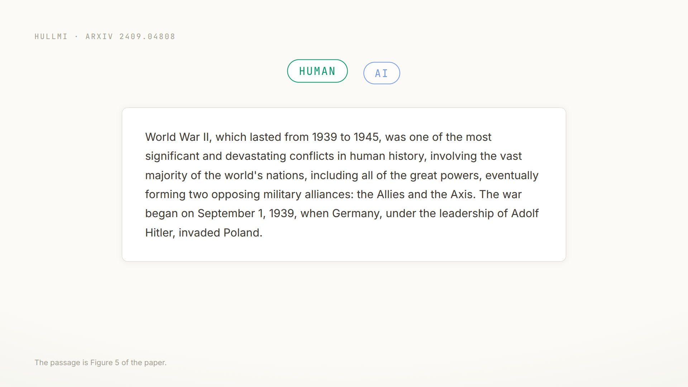

NeurIPS Workshop on Statistical Frontiers in LLMs and Foundation Models · 2024
Who Wrote This Paragraph?
We tested the machinery everyone uses to catch AI-generated
text, and the machinery everyone forgot. The old word counters kept up with
the transformer detectors, kept up better once the test left the lab, and
unlike the big models, they can show exactly which words gave the machine
away. The tells are smaller than you think.
Somewhere in the past week you read a paragraph
written by a machine, and you did not notice. Perhaps it was a news brief, a
product review, or an answer under a question you searched. The grammar was
clean, the tone was confident, and nothing gave it away.
This article walks through our study of that problem in the order we did
the work. We took the modern transformer detectors that dominate the field,
put them beside machine learning models from decades before anyone said the
words deep learning, and scored them all twice: once on the standard
benchmark, and once on a test we built from recipes, tweets, movie reviews
and exam answers that none of the models had ever seen. Then we did the part
most detection papers skip. We asked every model why it decided
what it decided, using an explanation technique called LIME, and the answers
changed how we think about what separates human writing from machine
writing.
A paragraph with no author
Text with no reliable author is not a curiosity; it is a growing tax on
every institution built on writing. In education, a model can complete an
assignment or an exam answer that is indistinguishable from a student's own
work, which quietly breaks the assessment the assignment was for. In
journalism, generated articles can be produced faster than editors can
check them. In security, language models have been called weapons of mass
deception for how cheaply they produce convincing phishing text. And in
politics, generated speeches and posts can be aimed at public opinion at a
scale no human writer could match.
The demand side of this problem is therefore easy to state: we need
detectors that read a passage and say whether a person wrote it. The supply
side is where it gets interesting, because there are two very different
schools of thought about what such a detector should be.
The standard answer is another black box
The dominant school says: to catch a large language model, train another
large model. Two well-known examples, and the two we test here, are
RoBERTa-Sentinel and T5-Sentinel. Each takes a pretrained transformer
language model and fine-tunes it on pairs of human and machine text until it
senses something machine-made in a paragraph. These detectors are genuinely
good. But they inherit the defining weakness of the models they are built
from: they are black boxes. A sentinel hands down a verdict with no reason
attached.
A verdict without a reason is a serious problem in exactly
the places detection matters most. A teacher who flags a student's essay
needs to point at evidence. A detector that cannot show its work turns an
accusation into an argument from authority.
The older school of machine learning was built on models that show their
work by construction. That raises the question this paper asks: how much
accuracy do you actually give up by using them?
Five tools that count words
We trained six traditional models: Naive Bayes, logistic regression,
random forests, XGBoost, a multi-layer perceptron (MLP), and, as a bridge
between eras, an LSTM. The first five share one pipeline, and it is worth
thirty seconds because everything later depends on it. A count vectorizer
turns each passage into a tally: how many times each of 5,000 vocabulary
words appears. A TF-IDF transform then reweighs that tally so that words
common in every document count for little and distinctive words count for a
lot. The classifier sees only this weighted tally. It never reads the text
in order; it literally judges you by your word counts.
The whole pipeline, animated. A passage becomes a bag
of word counts, TF-IDF shrinks the everywhere-words and boosts the
distinctive ones, and a classifier turns the weighted tally into a
verdict. Nothing here is deep: the model cannot see word order, sentence
structure, or meaning. The paper's finding is how far this alone gets
you.
Each model spends that tally differently. Naive Bayes multiplies per-word
probabilities as if words were independent. Logistic regression learns one
weight per word and adds them up. Random forests and XGBoost grow ensembles
of small decision trees over the counts. The MLP passes the tally through
two hidden layers, which lets it capture interactions between words. One
detail from the paper's ablations: adding the TF-IDF step, rather than
using raw counts, produced a significant jump in test accuracy for every
model in this family.
On the benchmark, the gap is seven points
Round one is the field's standard test. The OpenGPTText corpus contains
29,395 passages that GPT-3.5-turbo produced by rephrasing paragraphs of
OpenWebText, a widely used crawl of pages linked from Reddit, compiled in
2019, safely before large language models could have written it. Human
originals on one side, machine rephrasings on the other, an 80/20
train-test split, balanced classes.
The transformer detectors win round one, as expected. T5-Sentinel scores
0.98 accuracy with a receiver operating characteristic (ROC) area of a
perfect 1.00. But look at what the word counters do behind it.
0.98
T5-Sentinel accuracy, OpenGPTText
0.91
XGBoost accuracy, same test, counting words
0.99
ROC area for random forests, XGBoost and the MLP
Accuracy on OpenGPTText, all eight models (Table 4 of the
paper). Hover any bar for the full scorecard: F1, false positive and
false negative rates, ROC area. The entire spread between a 1960s-style
word counter at 0.91 and a modern sentinel at 0.98 is seven points. Naive
Bayes is the outlier at 0.69, and its failure is one-sided: it misses 56%
of machine text but almost never accuses a human.
Seven points is not nothing. If your only goal is leaderboard accuracy
on curated data, the sentinels are better. But a benchmark made of one
generator rephrasing one corpus is a narrow slice of the world, and models
that fit a narrow slice tightly have a habit of failing when the slice
moves. So we built a second round.
A harder test, built from the real world
We assembled 50 fresh samples, 25 human and 25 machine, that none of the
models had seen in any form, spread across five domains chosen to be as
unlike each other as possible: passages from the essay collection
101 Essays That Will Change the Way You Think, recipes by
MasterChef contestants, tweets from 2019, IMDb user reviews of the top 2018
films, and Quora answers about preparing for the IIT entrance exam. Long
formal prose, terse instructions, slang, opinion, and study advice.
The machine twins were made with GPT-4o-mini, and the construction
matters. If you simply ask a model to rephrase a human passage, the output
inherits the human's structure, and you have made the detector's job
artificially easy. Instead, each human passage was first summarized to
three lines; then, in a fresh chat with no sight of the original, the model
was asked to elaborate that summary back into a full passage. The twin
shares the topic but composes its own prose.
How each test pair was built. The human passage is
compressed to a three-line summary, the summary crosses to a fresh
conversation, and GPT-4o-mini writes its own passage from it. Topic
preserved, prose independent. For the short-form domains, tweets and
recipes, the prompt also pinned the output length to match the
original.
The leaderboard reshuffles
On this test the ranking from round one falls apart. The LSTM, which
scored a healthy 0.92 on the benchmark, collapses to 0.60, barely better
than flipping a coin. T5-Sentinel gives back ten points and lands at 0.88.
And the plain MLP, a small feed-forward network reading TF-IDF tallies,
matches T5 exactly at 0.88, while RoBERTa-Sentinel takes the lead at
0.92.
What leaving the lab does (Tables 4 and 5). Each line
is one model, from its benchmark accuracy to its accuracy on the unseen
five-domain test. The steeper the fall, the more the model had fit the
benchmark rather than the problem. Hover a line for exact values. The
LSTM's dive to 0.60 and the MLP holding at 0.88 are the two ends of the
story.
Two details in the error patterns are worth keeping. Naive Bayes, on
this test, has a false positive rate of exactly zero: it never once called
a human passage machine-made, at the cost of missing 44% of the machine
passages. If your detector's worst failure mode is accusing an innocent
person, that trade has real appeal. And the models that survived the domain
shift best, RoBERTa and the MLP, are at opposite ends of the complexity
scale, which suggests robustness here is less about size than about what
the model learned to attend to.
Benchmarks flatter every model. The real world plays no
favorites: half the field lost at least ten points the moment the test
stopped looking like the training data.
Asking every model why
Accuracy tables tell you what a model decided. For a detector that will
face a student or a journalist, we also need to know why. The tool
we used is LIME, short for Local Interpretable Model-agnostic Explanations,
and its idea is simple enough to state in one sentence: to explain one
prediction, perturb the input many times, dropping different words, watch
how the prediction moves, and fit a small linear model to those movements
so each word gets a weight for how much it pushed the verdict.
Because LIME only needs to call the model, not open it, the same
procedure explains Naive Bayes and T5-Sentinel alike. We ran it across all
eight models, on benchmark samples and on fresh text the models had never
seen, and plotted the ten most influential words for each prediction.
LIME, animated. The same passage is scored again and
again with different words masked. When masking a word drops the AI
probability, that word was evidence for AI; when masking it raises the
probability, it was evidence for human. The weights accumulate into the
bar chart on the right, which is exactly the kind of plot Figures 6 to 8
of the paper report.
The fingerprints are tiny
Here is the passage we will use, generated by ChatGPT-4o and analyzed in
the paper. Every model we tested, from Naive Bayes to T5-Sentinel, called
it AI-generated; the interesting part is which words they pointed at.
P(AI) 0.93
Try LIME yourself: click any word to remove it and watch
the verdict move. The highlighted words carry the real weights the
paper reports: blue words push toward an AI verdict (significant 0.31 for
the MLP, was 0.13 and history 0.12 for T5-Sentinel), warm words pull
toward human (war, the top human feature for Naive Bayes; Germany 0.11
for the LSTM). The probability shown is illustrative, recomputed from
those published weights; the direction of every movement is the paper's.
Look at what the machine's tells actually are. Not claims, not facts,
not structure: the word significant, the single most incriminating
word for both the MLP (weight 0.31) and the LSTM (0.29). The unassuming
was and history, the top two features for T5-Sentinel.
Polished, confident connective tissue. Meanwhile the words that read as
human are the concrete ones: war, the strongest human-side feature
for Naive Bayes, and Germany for the LSTM. Models have learned that
people write in particulars and language models write in varnish.
The strangest tell is the word the. During the analysis it kept
surfacing as evidence for AI, and our first instinct was to strip such
stopwords out in preprocessing. We decided against it, for a reason worth
stating plainly: language models, trained on oceans of edited prose, place
their articles perfectly, every time. Humans in a hurry, and many non-native
speakers, drop them. Delete the stopwords and you delete the fingerprint.
You do not tell a person from a machine by the big ideas.
You tell them apart by the smallest words on the page.
What the field assumed
Catching a large language model needs another large model.
Benchmark accuracy predicts real-world accuracy.
Explanations are a nice-to-have on top of detection.
What this study found
Word counters come within seven points on the benchmark, and tie or beat most deep models off it.
Half the field, including an 0.92 LSTM, reshuffles on unseen domains.
LIME turns any detector's verdict into evidence a person can inspect.
The film
The three-minute companion film tells this story with the paper's own
numbers animated, from the paragraph you did not catch to the smallest
words on the page.

Who Wrote This? Catching AI text, and proving why.
Produced by Vizuara Research. Every chart in the film is redrawn from
Tables 4 and 5 and Figures 5 to 8 of the paper.
Where this sits in prior work
The detectors we benchmark come from
Chen et al.'s GPT-Sentinel
(2023), which introduced the RoBERTa-Sentinel and T5-Sentinel architectures
and the OpenGPTText corpus we train on.
RADAR hardened this line of
work with adversarial training against paraphrasers.
On the classical side,
Jawahar et al.'s survey
covers the feature-based tradition, and
Kumarage et al. showed
stylometric features detecting machine text on Twitter timelines. Zero-shot
approaches such as DetectGPT skip training entirely by reading probability
curvature from the generator itself.
What was missing, and what this paper contributes, is the head-to-head:
the same data, the same testing protocol, traditional models beside modern
sentinels, plus an out-of-domain round, plus a uniform explainability pass
over every model with LIME. The point is not that transformers are bad
detectors; it is that the cheap, transparent baseline is far closer than
the field assumed, and it comes with reasons attached.
What this does not show
One generator family. The machine text here comes from
GPT-3.5-turbo (benchmark) and GPT-4o variants (custom test and LIME
samples). Detectors tuned to these tells may need retraining for other
model families, and the tells themselves will drift as generators
improve.
The custom test is small. Fifty samples across five domains is
enough to expose the reshuffle, not to rank models finely. Treat 0.88 vs
0.92 on that table as a tie; treat 0.92 vs 0.60 as the finding.
Binary labels only. Real documents are increasingly mixed,
with human drafts edited by models and model drafts edited by humans.
Nothing here addresses partial authorship.
No adversary. We did not test paraphrasing attacks,
style-transfer attacks, or writers deliberately imitating machine
varnish. A detector this transparent is also transparent to an
evader.
LIME is local. Each explanation covers one prediction. The
recurring tells across samples are suggestive, not a global theory of
the models' decision boundaries.
Appendix: the machinery from scratch
Bag of words, and why counting works at all
Take a 5,000-word vocabulary. A passage becomes a vector of 5,000
numbers: how many times each vocabulary word occurs. Two passages about the
same topic land near each other in this space because they use the same
content words. The order of words is thrown away entirely, which sounds
fatal until you notice how much of authorship style survives: preferred
connectives, favorite intensifiers, rates of articles and pronouns. Machine
text has measurably different rates for some of these, and a counter can
see rates perfectly.
TF-IDF in one figure
Raw counts overweight words that are common everywhere. TF-IDF fixes
this with one multiplication: a word's count in this document (term
frequency) times the log of how rare the word is across all documents
(inverse document frequency). A word like of appears in every
document, so its IDF is near zero and it nearly vanishes; a word like
Deborah appears in few, so when it does appear it dominates. The
paper found this single step significantly lifted every traditional
model's accuracy.
TF-IDF reweighting, animated. The gray bars are raw
counts for six words from the sample passage. Press play and each bar is
multiplied by its rarity: the everywhere-words shrink toward zero, and
the distinctive words rise. The classifier only ever sees the second set
of bars.
The classifiers in one paragraph each
Naive Bayes asks, for each class, how likely this bag of words
would be if the class were true, multiplying per-word probabilities as if
words were independent (that independence is the naive part), and picks the
class with the higher product. Logistic regression learns one weight
per word, sums weight times count, and squashes the sum into a probability;
its weights are directly readable as per-word evidence. Random
forests grow hundreds of decision trees on random subsets of data and
features, and vote. XGBoost grows its trees sequentially, each one
correcting the residual errors of the last. The MLP feeds the
weighted counts through two hidden layers of learned nonlinear units,
which lets combinations of words matter, not just single words. The
LSTM is the odd one out: it reads the text in order, token by
token, carrying a memory cell, and its collapse on unseen domains suggests
that what it memorized about sequence was benchmark-specific.
The sentinels
RoBERTa-Sentinel runs the passage through a pretrained RoBERTa
encoder, takes the summary vector, and classifies it with a small MLP
head; the encoder's 125 million parameters were shaped by general language
pretraining, then fine-tuned for this task for 15 epochs.
T5-Sentinel treats detection as text generation: the
encoder-decoder reads the passage and literally generates the token
"positive" or "negative", so classification rides on everything T5 learned
about producing text. That framing is likely why it edges out RoBERTa on
the benchmark, and a reminder that its 0.98 is bought with vastly more
computation than XGBoost's 0.91.
LIME, honestly stated
For one passage and one model, LIME generates a few thousand variants of
the passage with random subsets of words removed, gets the model's
probability for each variant, then fits a small weighted linear model that
predicts those probabilities from which words were present. The linear
model's coefficients are the explanation: the weight on
significant is how much, locally, that word's presence moved this
model toward the AI verdict. It is model-agnostic because it never looks
inside; the model could be a lookup table. Its cost is honesty about
scope: the explanation holds near this passage, not everywhere.
Reproduce it
Everything is public: the code, both datasets, the custom 50-sample
test set, and the LIME notebooks. The traditional models train in minutes
on a laptop CPU; the sentinels fine-tune in hours on a single modest
GPU (batch 512, 15 epochs for RoBERTa-Sentinel, 5 for T5-Sentinel,
AdamW, cosine annealing).
git clone https://github.com/pdjoshi-30/HULLMI-HUMAN-VS.-LLM-IDENTIFICATION-WITH-EXPLAINABILITY
# datasets: OpenGPTText (Chen et al. 2023) + OpenWebText (2019 crawl)
# traditional pipeline: CountVectorizer -> TfidfTransformer -> model
# models: NaiveBayes / LogisticRegression / RandomForest / XGBoost / MLP / LSTM
# sentinels: RoBERTa-Sentinel, T5-Sentinel (configs of Chen et al.)
# explanations: LimeTextExplainer, top-10 features per prediction
Model
Benchmark acc.
Real-world acc.
ROC area
Shows its work?
Naive Bayes
0.69
0.78
0.93
yes, per-word probabilities
Logistic regression
0.90
0.84
0.98
yes, readable weights
Random forests
0.85
0.70
0.99
partly, feature importances
XGBoost
0.91
0.72
0.99
partly, feature importances
MLP
0.89
0.88
0.99
via LIME
LSTM
0.92
0.60
0.98
via LIME
RoBERTa-Sentinel
0.95
0.92
0.99
via LIME
T5-Sentinel
0.98
0.88
1.00
via LIME
The paper: HULLMI: Human vs LLM
identification with explainability (also on
arXiv), accepted at the
NeurIPS Workshop on Statistical Frontiers in LLMs and Foundation Models,
2024. Authors: Prathamesh Dinesh Joshi (IIIT Kurnool), Sahil Pocker, Rajat
Dandekar, Raj Abhijit Dandekar and Sreedath Panat (Vizuara AI Labs).